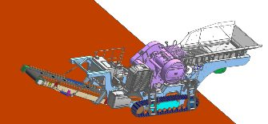
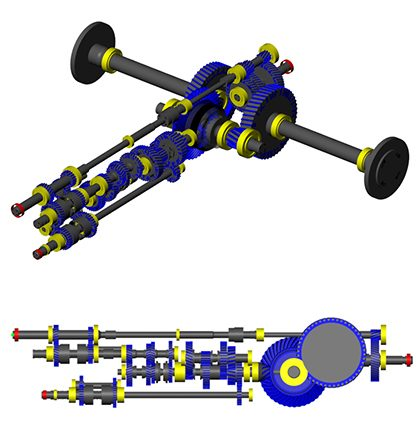
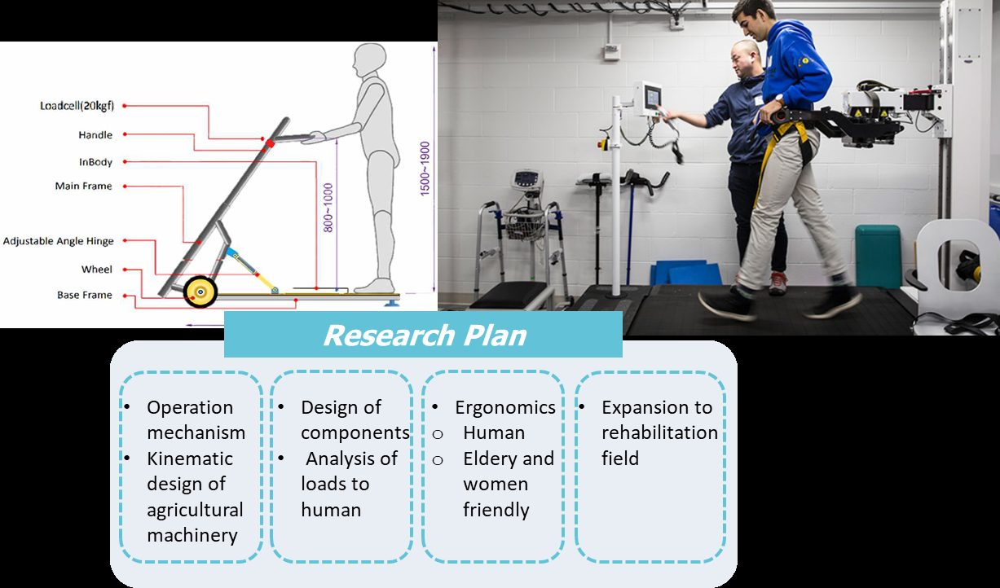
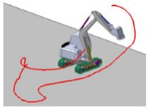
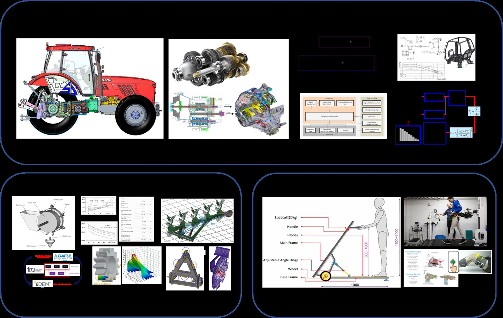
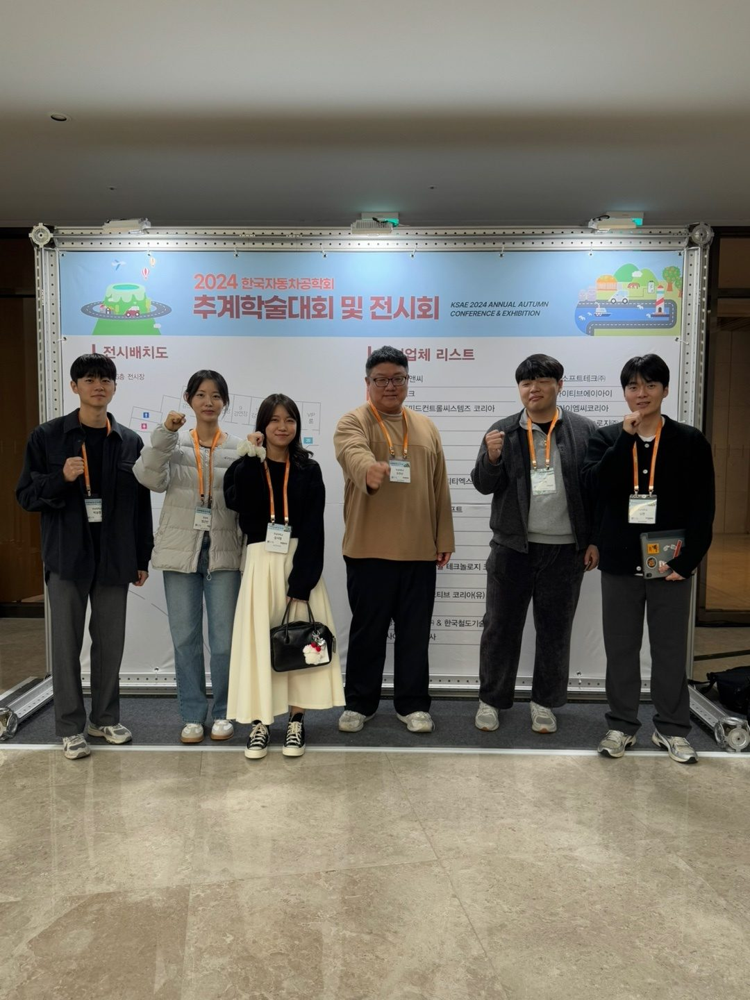
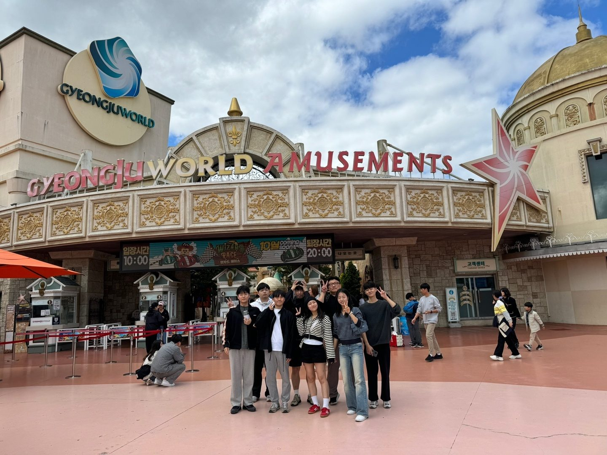
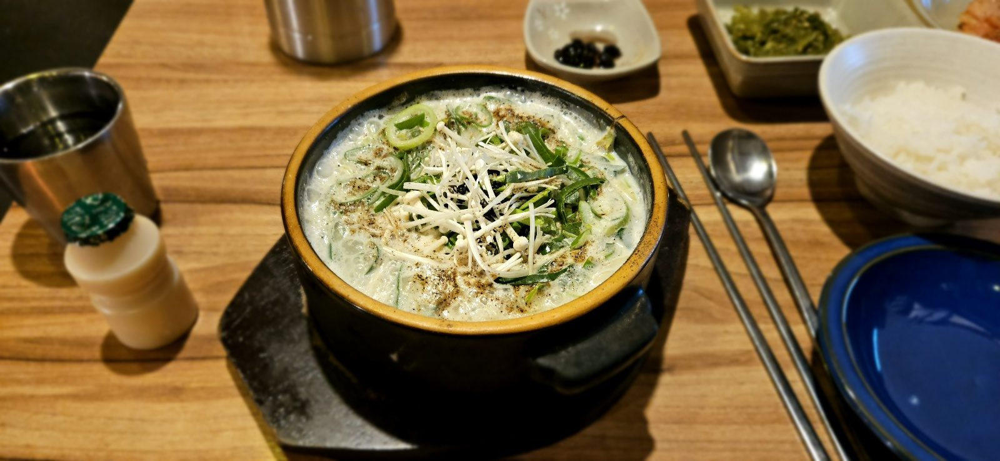
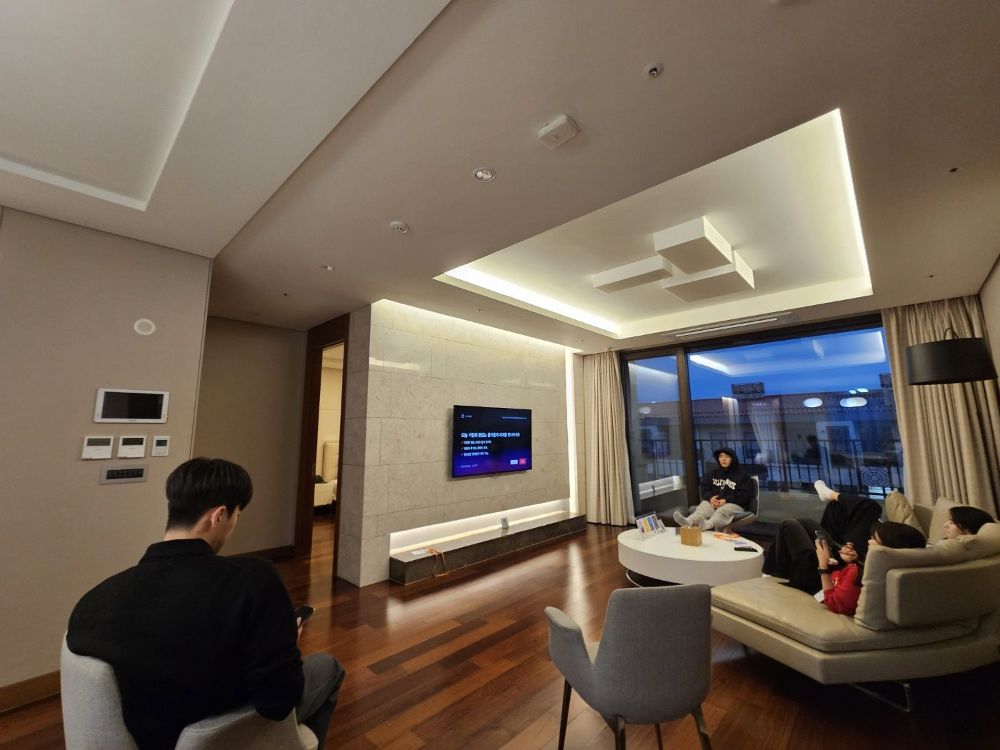

01
Development of Upland Crop Machines
Design of transplanters, harvesters, and implements for upland crops such as onion, garlic, chili pepper, and potato.
Applications: Transplanter, harvester & implement
Chonnam National University · Department of Convergence Biosystems Engineering
Designing, analyzing, and testing the machines that move the world off the road.

Off-road mobility systems — agricultural machinery, construction equipment, and beyond. We cover the full cycle of design, analysis, and test & evaluation.

Design of transplanters, harvesters, and implements for upland crops such as onion, garlic, chili pepper, and potato.
Applications: Transplanter, harvester & implement

Mechanism of interaction between humans and machines, from operator load analysis to elderly- and women-friendly component design.
Applications: Agricultural machinery, rehabilitation medical industry

Optimal design of driving devices for soft and unstructured terrain.
Applications: Agricultural machinery, lunar exploration rover
Technology development of tractor automatic transmissions, including simulation modeling and noise reduction.
Applications: Tractors, off-road machinery powertrains

New accelerated life test codes based on equivalent damage — prediction of input loads using virtual load test models and simulation.
Applications: Transmissions, axles, suspensions, test rigs
Assistant Professor
Transplanters and harvesters for onion, garlic, chili pepper, and potato.
Prediction of input loads using a virtual load test model.
Welcome to the new homepage of the Laboratory for Off-Road Mobility System at Chonnam National University.

Our lab members presented their research at the fall academic conference and exhibition.



Fundamentals of agricultural machinery design and off-road machinery engineering.
Department of Convergence Biosystems Engineering
Chonnam National University
77 Yongbong-ro, Buk-gu, Gwangju 61186, Republic of Korea
We are always looking for motivated graduate and undergraduate students interested in off-road machinery, vehicle dynamics, and human–machine interaction. Contact us by email.
Email Us